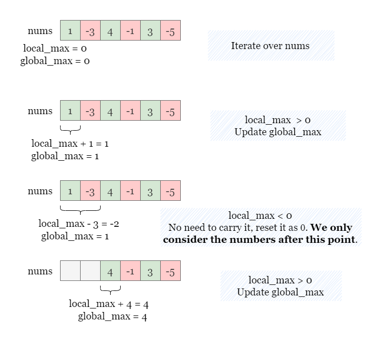
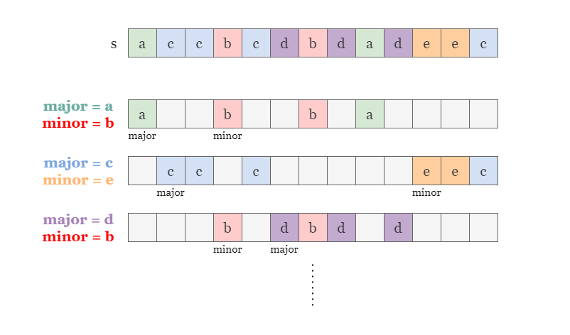
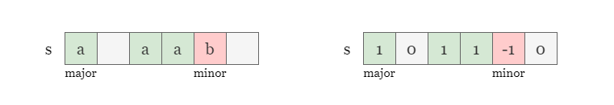
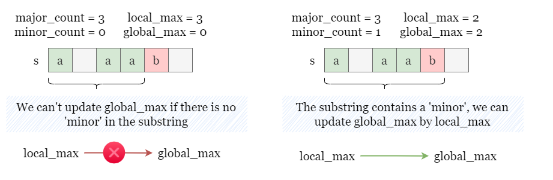
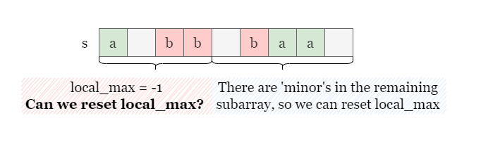
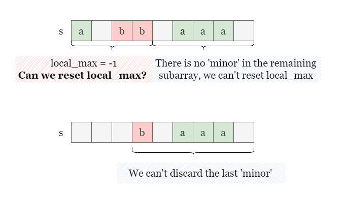

1 / 8
If you are not familiar with Kadane's algorithm, you may refer to this wikipedia's page.
Kadane's algorithm is a dynamic programming algorithm that finds the maximum subarray sum in an array of integers. It maintains two values: global_max, which represents the maximum sum encountered so far, and local_max, which represents the maximum sum ending at the current index. As the algorithm traverses the array from left to right, it updates these values. The algorithm is efficient because it only requires O(n)O(n) time and O(1)O(1) space to store two values and does not need any additional data structures.
As shown in the figure below, local_max represents the maximum value of the subarray ending at the
current index. We update local_max at each index and update global_max by the maximum
local_max. This ensures that we always have the maximum sum subarray at each position.

Note that if the current subarray has a negative sum, we can discard it. In other words, if local_max is
less than 0, we reset local_max to 0.
A similar approach can be used to solve this problem. Although s may contain many different characters,
we can focus on one pair of letters (major, minor) at a time and calculate the maximum difference
between their occurrences by applying Kadane's algorithm over all substrings of s that contain both
major and minor.
In other words, we assign the value of
majoras 1, the value ofminoras -1, and the value of all other letters as 0, and use the standard Kadane's algorithm to find the maximum subarray sum in the array representings.

For instance, let's consider the pair of letters (a, b) as (major, minor) and determine
their maximum variance in s. We update two variables major_count and
minor_count, to keep track of the number of major and minor in the substring
ending at the current index. Thus, local_max can be represented as major_count -
minor_count. The equivalent of resetting local_max to 0 is setting both
major_count and minor_count to 0.

Please refer to the following slides to see how we update global_max. Note that this algorithm
is not completely correct and requires some modifications, which we will explain later.
We notice that the standard Kadane's algorithm has failed to solve the problem. This is because Kadane's algorithm
allows the subarray being considered to have no element with negative value. However, in our problem, a valid
substring must contain at least one major and one minor, so the maximum variance
calculated by regular Kadane's algorithm does not necessarily represent a valid substring.
Therefore, we need to modify Kadane's algorithm to solve this problem.
Update
global_maxonly whenminor_count > 0.
This ensures that we only consider valid substrings that contain at least one minor. As shown in the
picture below, we cannot update global_max if minor_count = 0. However, after encountering
at least one minor, we can update global_max as global_max = max(global_max,
local_max) = 2.

Reset
local_maxto 0 only when there is at least oneminorin the remaining substring.
Recall that we need a step local_max = max(local_max, 0) in regular Kadane's algorithm, which always
discards the current subarray if it has a negative sum.
In this problem, however, we cannot simply reset local_max to 0 whenever it becomes negative because
doing so would reset both major_count and minor_count to 0. If there are no more minor
in the remaining string, the minor_count will remain 0, and we will never be able to update global_max
during the remaining traversal. To avoid this situation, we reset local_max to 0 only when there is at
least one minor in the remaining s. To achieve this, we can use an additional variable
rest_minor to keep track of the number of minor in the remaining string.
As shown below, if local_max < 0 and there is still minor in the remaining string, we
can reset it to 0 (i.e., reset both minor_count and major_count to 0).

However, if there is no minor left in the remaining string, we cannot reset minor_count or
major_count to 0, as any valid string found in the following iteration must contain at least one minor,
so we cannot discard the last minor by setting minor_count to 0.

To sum up, we will identify every pair of different letters in the given string, treat one as a major
letter and the other as a minor letter, and then apply the modified Kadane's algorithm to traverse
s. During the traversal, we need to keep track of the maximum variance between the occurrences of
major and minor, which we call global_max. After traversing all the
substrings for each pair of major and minor, we take the maximum value of
global_max as the final result.
Initialize a counter to record the count of each distinct character in s. (Since we already know
in advance that s contains only 26 different letters, we can use an array of length 26 as the
counter)
For each pair of distinct letters major and minor, we apply Kadane's algorithm with
modifications. All different pairs of distinct letters are considered, and two pairs of the same
letters in different orders are considered to be different. In short, we will consider both
(a, b) and (b, a).
Set global_max, major_count and minor_count to 0, and let rest_minor
be the number of character minor in the string.
Traverse the string s, and for each letter ch:
ch is major, increment major_count by 1.ch is minor, increment minor_count by 1 and decrement rest_minor
by 1.
Update global_max only when minor_count > 0 (The first modification).
If major_count - minor_count < 0, reset them to 0 only when rest_minor > 0
(The second modification).
Move on to the next pair of letters (major, minor) and repeat from step 3.
Return global_max when the iteration is complete.
Java
class Solution {
public int largestVariance(String s) {
int[] counter = new int[26];
for (char ch : s.toCharArray()) {
counter[(int)(ch - 'a')]++;
}
int globalMax = 0;
for (int i = 0; i < 26; i++) {
for (int j = 0; j < 26; j++) {
// major and minor cannot be the same, and both must appear in s.
if (i == j || counter[i] == 0 || counter[j] == 0) {
continue;
}
// Find the maximum variance of major - minor.
char major = (char)('a' + i);
char minor = (char)('a' + j);
int majorCount = 0;
int minorCount = 0;
// The remaining minor in the rest of s.
int restMinor = counter[j];
for (char ch : s.toCharArray()) {
if(ch == major) {
majorCount++;
}
if(ch == minor) {
minorCount++;
restMinor--;
}
// Only update the variance if there is at least one minor.
if (minorCount > 0)
globalMax = Math.max(globalMax, majorCount - minorCount);
// We can discard the previous string if there is at least one remaining minor.
if (majorCount < minorCount && restMinor > 0) {
majorCount = 0;
minorCount = 0;
}
}
}
}
return globalMax;
}
}
C++
class Solution {
public:
int largestVariance(string s) {
vector counter(26, 0);
for (char ch : s) {
counter[ch - 'a']++;
}
int globalMax = 0;
for (int i = 0; i < 26; i++) {
for (int j = 0; j < 26; j++) {
// major and minor cannot be the same, and both must appear in s.
if (i == j || counter[i] == 0 || counter[j] == 0) {
continue;
}
// Find the maximum variance of major - minor.
char major = 'a' + i;
char minor = 'a' + j;
int majorCount = 0;
int minorCount = 0;
// The remaining minor in the rest of s.
int restMinor = counter[j];
for (char ch : s) {
if (ch == major) {
majorCount++;
}
if (ch == minor) {
minorCount++;
restMinor--;
}
// Only update the variance (local_max) if there is at least one minor.
if (minorCount > 0)
globalMax = max(globalMax, majorCount - minorCount);
// We can discard the previous string if there is at least one remaining minor
if (majorCount < minorCount && restMinor > 0) {
majorCount = 0;
minorCount = 0;
}
}
}
}
return globalMax;
}
};
Let nn
be the length of the input string s and kk
be the number of distinct characters in s.
Time complexity: O(n⋅k2)O(n \cdot k^2)
s. For each pair of alphabets (major, minor), we need to traverse
s once. In the worst-case scenario, s contains k=26k = 26
different letters, so there are k⋅(k−1)k\cdot (k - 1) possible pairs of
letters.
Space complexity: O(1)O(1)
major_count, minor_count,
rest_minor and global_max, which require O(1)O(1) space.